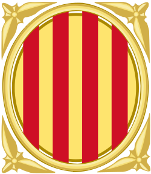

Maquetación web
Conversión de diseños Figma o XD en código HTML + SASS limpio, semántico y organizado con BEM. Entrega lista para integrar en cualquier CMS o framework.
Construyo interfaces web accesibles, limpias y de alto rendimiento con HTML semántico, CSS/SASS, JavaScript y metodología BEM.
Soy un maquetador web con más de 5 años transformando diseños en interfaces que no solo se ven bien, sino que también funcionan excepcionalmente en cualquier dispositivo y son accesibles para todas las personas.
Mi metodología parte del HTML semántico como base sólida, construyo la arquitectura de estilos con SASS siguiendo la metodología BEM para garantizar componentes reutilizables y mantenibles, e integro todo en Astro para conseguir sitios ultra-rápidos con cero JavaScript innecesario.
Me apasiona la accesibilidad: aplico las WCAG 2.1 nivel AA no como un requisito, sino como parte natural de mi proceso. Creo firmemente que una web bien construida debe ser para todo el mundo.
Conversión de diseños Figma o XD en código HTML + SASS limpio, semántico y organizado con BEM. Entrega lista para integrar en cualquier CMS o framework.
Interfaces que funcionan a la perfección en móvil, tablet y escritorio. Estrategia mobile-first con breakpoints bien definidos y pruebas reales en dispositivos.
Auditoría de accesibilidad basada en los estándares WCAG, evaluando el cumplimiento de los criterios esenciales (A, AA y AAA) para garantizar que el sitio pueda ser utilizado por todas las personas, incluidas aquellas con discapacidades visuales, motoras, auditivas o cognitivas.

Funciones
Contribución en la realización a nivel de maquetación de diferentes componentes para la plataforma OpenCms para la Generalitat de Catalunya y realización de informes detallados sobre accesibilidad web, incluyendo análisis automáticos y manuales para la detección de errores mediante herramientas como el Observatorio de Accesibilidad del Gobierno de España y Siteimprove.
Funciones
Contribución en la realización de los diversos componentes para el proyecto de ‘Feina Activa’ para la Generalitat de Catalunya.
Atención al detalle
Reviso pixel a pixel que la maquetación coincida con el diseño en todos los breakpoints antes de dar por terminado un proyecto.
Comunicación clara
Explico mis decisiones técnicas en lenguaje accesible y mantengo al cliente informado en cada fase del proyecto.
Gestión del tiempo
Trabajo con estimaciones realistas y cumplo los plazos acordados.
Trabajo en equipo
Colaboro fluidamente con diseñadores, desarolladores y clientes finales, adaptando mi lenguaje al interlocutor.
Aprendizaje continuo
El frontend evoluciona rápido. Dedico tiempo semanal a leer specs del W3C, explorar nuevas APIs CSS y experimentar con herramientas emergentes.